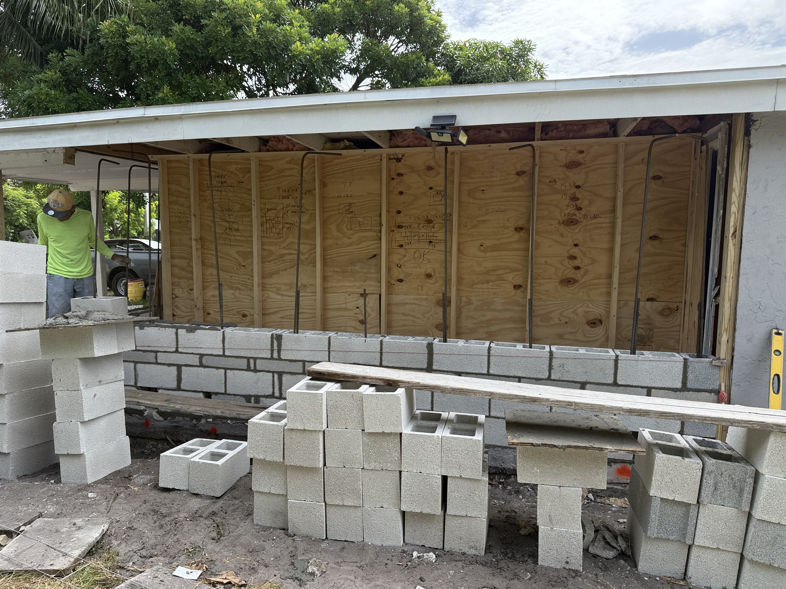
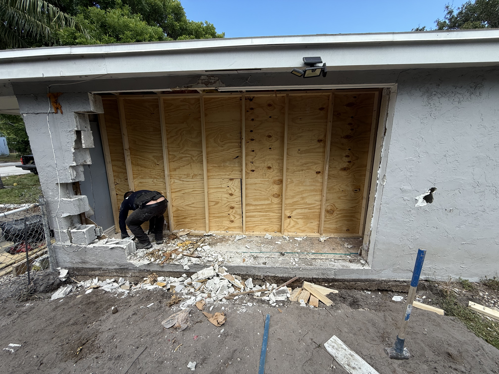
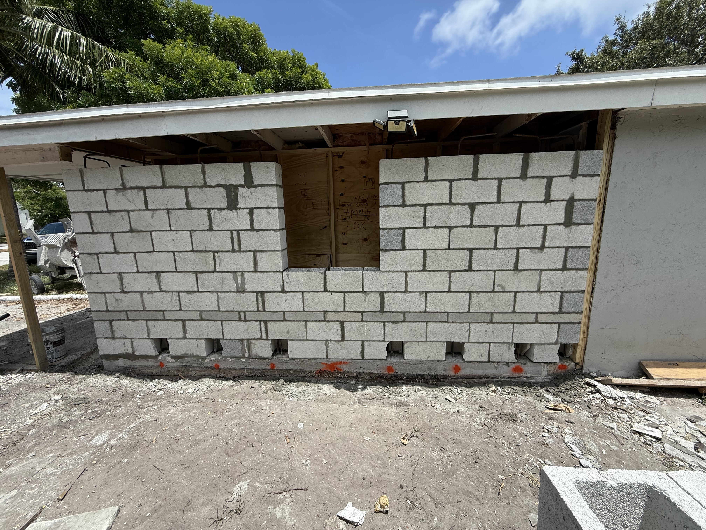

One-coat stucco is three coats short.
In South Florida, stucco doesn't just have to look good — it has to survive salt-air, driving rain, and humidity that finds every shortcut a crew took. Most failures trace back to one thing: somebody sprayed it on fast and called it done.
Real stucco is built in coats — lath, scratch, brown, and finish — and each one has a job. We do it the slow way because the slow way is the only way it lasts on the coast. Repair, recoat, or full restucco — licensed Florida contractor, CBC1263425, serving Broward, Palm Beach & Miami-Dade.
Four coats, done in order.
Lath & Barrier
Moisture barrier and galvanized lath, fastened to spec, so stucco grips and water drains.
Scratch Coat
The structural first coat, scored so the next coat keys in instead of peeling later.
Brown Coat
The leveling coat that makes the wall flat, true, and ready for finish.
Finish Coat
The texture and color you actually see, floated to match your home.
Crack & Water Repair
We chase the cause — not just the symptom — before patching over it.
Color & Texture Match
Recoats and patches blended so repairs disappear into the existing wall.
Five steps, one accountable owner.
Consult & Assess
We read the walls, find whether it's surface or a water problem underneath, and give an honest estimate.
Prep & Lath
Old failed stucco removed, moisture barrier and galvanized lath set, edges and joints detailed.
Scratch & Brown
Structural coats built and cured in order — no rushing the bond that holds it together.
Finish & Cure
Texture floated, color matched, and properly cured so it reads right and lasts.
Walk-through
We walk the wall with you, hit the punch list, and clean the site like it's our own home.



What people ask first.
What does it cost to restucco a house?
It depends on square footage, how much repair the wall needs underneath, and the finish texture. We give a firm, line-item estimate after we see the walls — not a guess over the phone.
How long does stucco last in Florida?
A properly built multi-coat stucco system lasts decades. The failures we see are almost always one-coat shortcuts or unaddressed water intrusion behind the wall.
Do you do repair, or only full restucco?
Both — and we'll tell you honestly which your home actually needs. We don't sell a full restucco when a targeted repair will hold.
Do stucco jobs need a permit?
Small repairs often don't; larger recoats, full restucco, and anything structural do. We handle the permits and inspections.